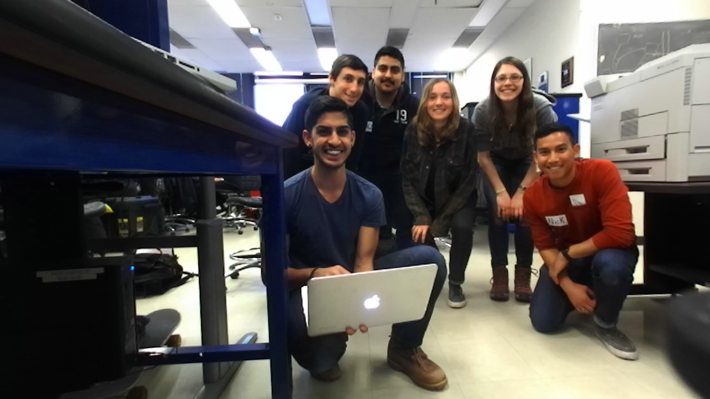
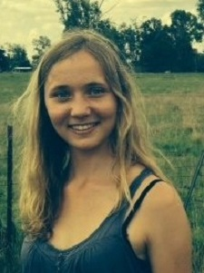
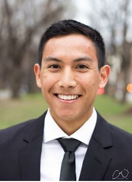
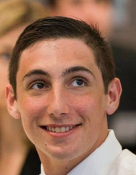

Team Introduction

First Team Best Team (a.k.a. Team 1) is comprised of six MIT undergraduates from MIT's AeroAstro department, which are individually described in the page below. The team varies in experience, but overall shares a genuine interest in topics around autonomy, such as path planning, computer vision, and control systems. These interests in autonomy, along with graduation requirements, drove them all indivdually to take 6.141 and will drive the team towards a succesful race by the end of the semester.
Jose A. Gomez
Jose Gomez is a senior in MIT's AeroAstro Department and originally from Mcallen, Texas. He focuses on working on controls and autonomous systems, but has varying experince in other topics. After graduation, Jose plans to work for General Motors in the Milford, MI proving grounds as a controls engineer.
Samir Wadhwania
Samir is from San Antonio, Texas. He is a current junior in MIT's AeroAstro Department, but has varying interests outside of engineering such as international development and public policy. Academically, Samir's interests lie in controls and autonomous systems. Outside of class, Samir likes to spend his time reading up on current events, longboarding, and bowling.
Clementine Mitchell

Clementine is from Glasgow, Scotland. She is currently a junior studying Aerospace Engineering with particular interests in controls and human factors relating to spaceflight. Outside of class, Clementine spends her time working on her research project in MIT’s Man Vehicle Lab and running on MIT’s Track and Field team.
Nick Villanueva

Nick is currently a senior in MIT’s AeroAstro Department. He is originally from Lafayette California. Upon graduation he plans to commission into the U.S. Air Force.
Martina Stadler
Martina is a junior in Course 16 with a focus on autonomous systems. She is a Co-President of the MIT Student Chapter of AIAA, and is the Payload Subteam Lead and the Social Chair for the MIT Rocket Team. When she has a spare moment, she plays IM hockey with AeroAstro and bakes cakes for her floor.
Jake Liguori

Jake is a fourth year undergraduate at MIT pursuing a degree in Aerospace Engineering. He will be taking his talents to New York following graduation to begin a career in Commodities Trading. Jake currently spends his free time rowing on the Charles River and developing an app with his fraternity brothers.